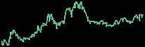
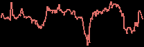
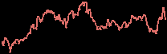
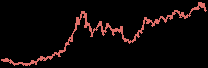
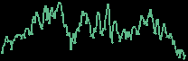
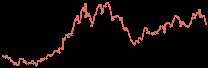
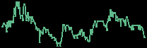
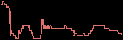

Corporate Sector Intelligence 09:15 · Wed 4 Nov 2026 · news since Tue 03 Nov 09:30 (Zurich) |
At a glance Prices as of 09:05 Zurich 1. Nordic Renewables and Power: Orrön Energy booked a EUR 28 million gain on the Cloudberry deal and put three German energy hubs up for sale; Cadeler won turbine installation work at Dogger Bank C; NCC will prepare a data-centre site in Pori, Finland. 2. Lundin Group of companies: NGEx Minerals won court approval for its Valle Ancho spin-out; Montage Gold produced about 23,460 ounces at Koné in October. 3. EU-listed oil and gas: Panoro Energy posted in-line third-quarter output while it assesses the Dussafu rig loss; Europa Oil and Gas is appealing the Cloughton planning refusal; Synergia Energy's Cambay well slipped to 2027. |
|
1. Nordic Renewables and Power |
Orron Energy 8.47 1d +3.3% 1m +12.5%YTD +83.9% SEK · last trade 09:05 |  ORRON.ST · 1 year |
Cloudberry Clean Energy 12.42 1d −1.4% 1m +5.1%YTD −3.4% NOK · close 3 Nov |  CLOUD.OL · 1 year |
Orrön Energy's nine-month report booked a EUR 28 million gain on its Cloudberry deal and ended with net debt of EUR 3 million; its 27.01% Cloudberry stake was worth EUR 135 million at the end of September, about SEK 5.4 per Orrön share. Orrön has started a sales process for three German energy hubs totalling 3.3 gigawatts (GW), including 1.25 GW of data centres. Orrön also said it is exploring strategic options for its 7 GW of powered land for data centres in the UK, Germany and France; the German hub sale is the first test of that value. |
Cadeler 58.20 1d −4.6% 1m +9.4%YTD +21.1% NOK · close 3 Nov |  CADLR.OL · 1 year |
Equinor 422.10 1d −1.4% 1m +4.8%YTD +78.1% NOK · close 3 Nov |  EQNR.OL · 1 year |
|
NCC 183.00 1d −0.2% 1m +5.5%YTD −16.9% SEK · last trade 09:05 | NCC-B.ST · 1 year |
|
2. Lundin Group of companies |
NGEx Minerals 20.85 1d +2.9% 1m −17.8%YTD −18.6% CAD · close 3 Nov |  NGEX.TO · 1 year |
|
Montage Gold 14.45 1d +0.3% 1m −19.4%YTD +46.3% CAD · close 3 Nov | MAU.TO · 1 year |
Montage Gold produced about 23,460 ounces of gold at Koné in October, processing about 880,000 tonnes with the oxide circuit averaging over 90% of its 11 million tonnes a year nameplate and reaching 104% in the last week; commercial production is on track for the fourth quarter, and drilling has now outlined 12 deposits against two in the 2024 feasibility study (announced yesterday). Year-end reserves and resources and an updated mine plan come next, with mining at the higher-grade Gbongogo Main deposit due to ramp up late in the fourth quarter. |
3. EU-listed oil and gas |
Panoro Energy 30.10 1d −3.5% 1m +2.4%YTD +49.0% NOK · close 3 Nov |  PEN.OL · 1 year |
Panoro Energy's trading update put third-quarter pro forma working-interest production at 20,049 barrels of oil equivalent per day (boepd), in line with guidance, and said it sold 714,964 barrels in October at a record realised USD 127.5 a barrel for USD 91.2 million. It is still assessing the impact of the 24 October sinking of the Prospector 5 rig at Dussafu in Gabon, which made up about 17% of nine-month pro forma output. The rig was preparing the MaBoMo Phase 2 drilling campaign; third-quarter results on 18 November are the next chance for an outlook. |
Europa Oil and Gas 1.43 1d 0.0% 1m −16.2%YTD −32.1% GBp · close 3 Nov |  EOG.L · 1 year |
Europa Oil and Gas is appealing to the Secretary of State against North Yorkshire Council's refusal of planning permission for its Cloughton gas appraisal well, a decision that went against the council's own planning officers' recommendation. |
Synergia Energy 0.0085 1d −5.6% 1m −15.0%YTD −5.6% GBp · close 3 Nov |  SYN.L · 1 year |
Synergia Energy said the spud of the C-79 well on its 50%-owned Cambay production sharing contract in India has slipped from late November to February or March 2027, because the drilling rig is still working for Oil and Natural Gas Corporation (ONGC) in Assam. |
| Corporate Sector Intelligence · primary sources: Oslo Børs NewsWeb, MFN, Nasdaq Nordic, Investegate RNS, company releases. Our view only, not investment advice. |